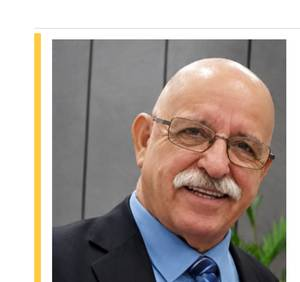
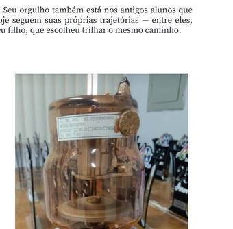

Para Wilmar, aprender é um processo permanente. Aos estudantes, ensina a importância de amar a profissão e compreender a responsabilidade por trás de cada exame. Aos professores, reforça o compromisso com a atualização e a formação de novos profissionais. E aos que estão chegando, deixa uma orientação que resume sua trajetória: antes de olhar para a imagem, é preciso olhar para o paciente.
Seu orgulho também está nos antigos alunos que hoje seguem suas próprias trajetórias — entre eles, seu filho, que escolheu trilhar o mesmo caminho.
Em reconhecimento aos profissionais de destaque da área, a CORED-SP homenageia uma história construída com conhecimento, dedicação e compromisso. Um legado que atravessa gerações e se resume em uma certeza: o conhecimento precisa ser compartilhado, a profissão exercida com amor e o paciente nunca pode deixar de ser o centro do nosso trabalho.
